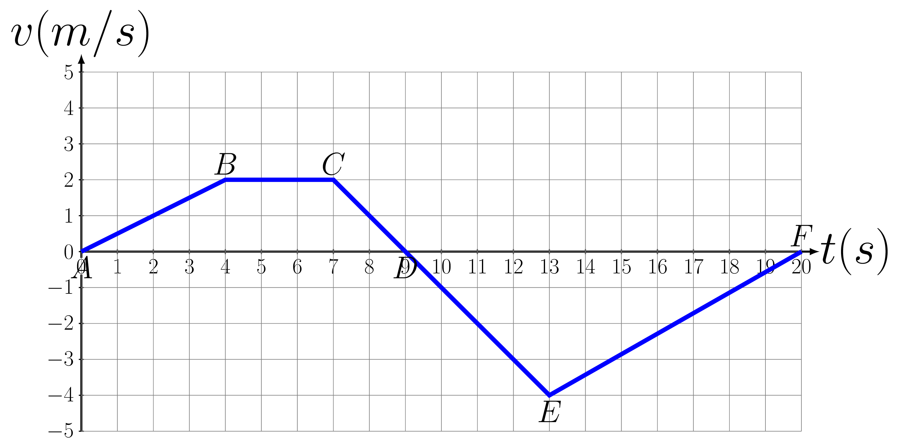
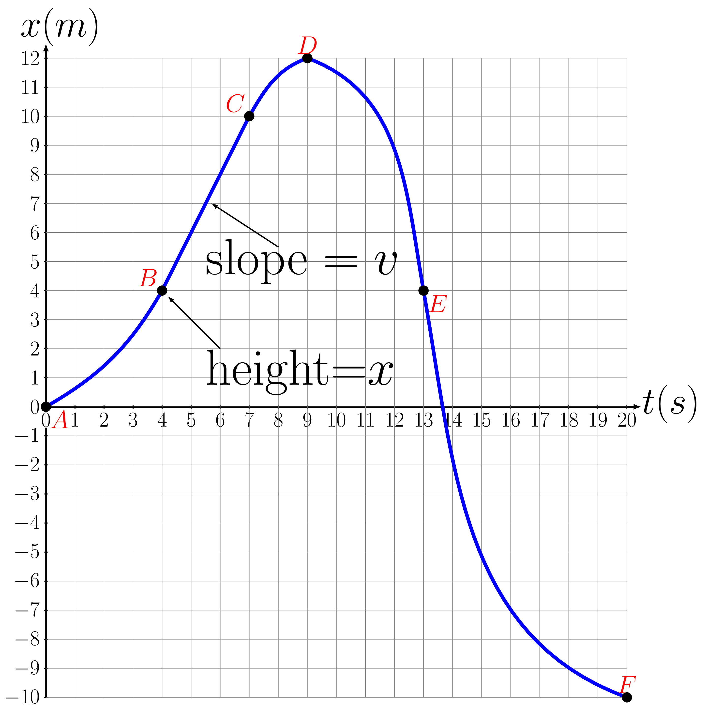
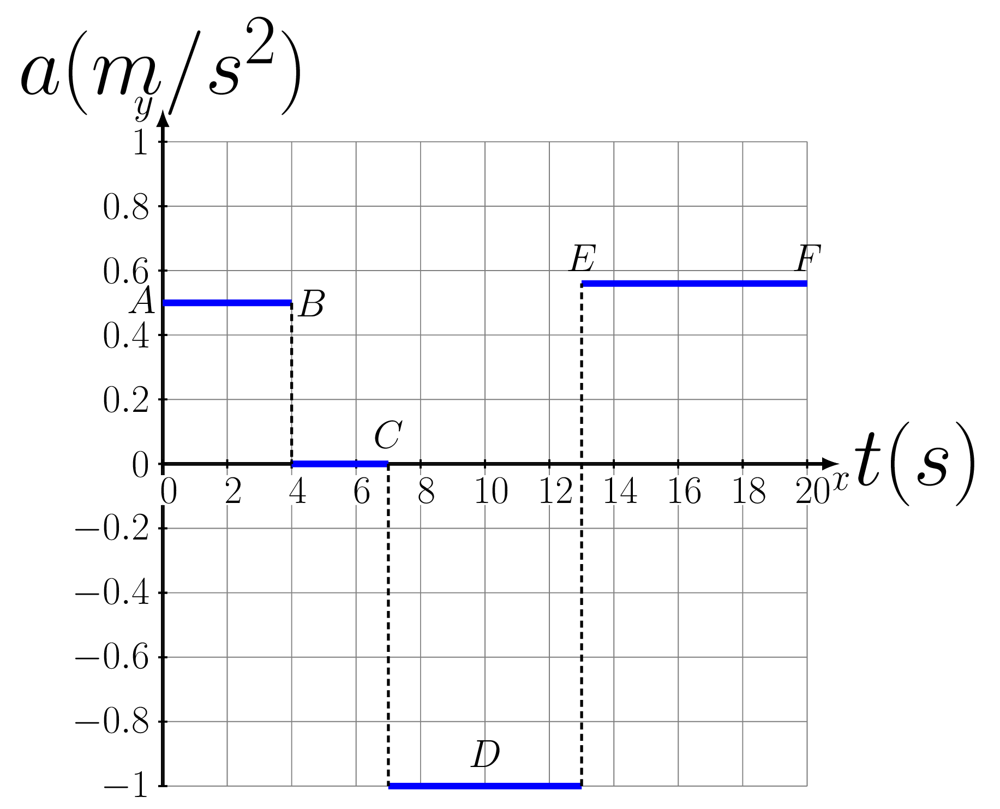

Given the velocity versus time graph as shown below:

-
Construct a table showing distance traveled, velocity, and acceleration at various times throughout the motion and
-
Plot graphs of distance versus time and acceleration versus time.
Solution.
-
Select several critical points on the \(v\) versus \(t\) graph as shown in the given figure. Measure the height of each point and tabulate it as velocity \(v\text{.}\) Measure the area under the curve and tabulate it as position \(x\text{.}\) Measure the slope of curve and tabulate it as the acceleration \(a\text{.}\)
Points \(t (s)\) \(x (m)\) \(v (m/s)\) \(a (m/s^2)\) \(x=v_{o}t+\frac{1}{2}a t^2\) A \(0\) 0 0 --- \(x_{1}=0\) B 4 4 2 \(\frac{2}{4} = 0.5\) \(x_{2} = 0+\frac{1}{2}(0.5)(4^2)=4\) C 7 4+6=10 2 0 \(x_{3} = 2\times 3 =6\) D 9 10+2=12 0 \(\frac{-2}{2} = -1\) \(x_{4} = 2\times 2+\frac{1}{2}(-1)(2^2) =2\) E 13 12-8=4 -4 \(\frac{-4}{4} =-1\) \(x_{5} = 0+\frac{1}{2}(-1)(4^2) =-8\) F 20 4-14=-10 0 \(\frac{4}{7} = 0.57\) \(x_{6}=-4\times 7+\frac{1}{2}(0.57)(7^2) =-14\) -
Plot this tabulated data as shown below:

